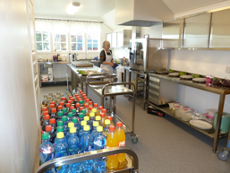

Historien vår
Ask kirke stod ferdig i 1908, til stor glede for bygdefolket. Men det viste seg snart at en hadde behov for et forsamlingshus. Lag og organisasjoner ønsket et tjenlig «bedehus» i tillegg til kirken. Høytidelig ble det bestemt at navnet skulle være: Ask menighetshus. 19 år etter ble huset reist og innviet 1. januar 1939.
Huset ble flittig benyttet til vanlige møter, basarer, utleid til sangkor, barnekontroller i kommunal regi, klasserom og selvsagt til barne- og ungdomsarbeid. I 1978 ble huset kraftig rustet opp med nybygg og sanitærfasiliteter. I mangel på barnehageplasser ble det etablert en korttidsbarnehage, senere langtidsbarnehage i huset. Denne eksisterte i ca. 30 år.
Etter år 2000 er huset blitt påbygget flere ganger og rehabilitert til et moderne og lettdrevet anlegg. Særlig var det nye «storkjøkkenet» i 2014, en stor nyvinning.
